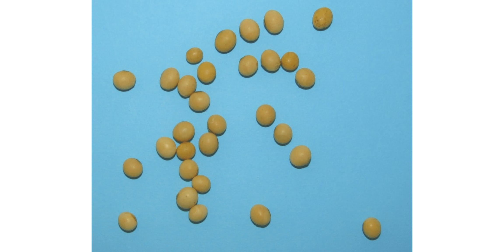
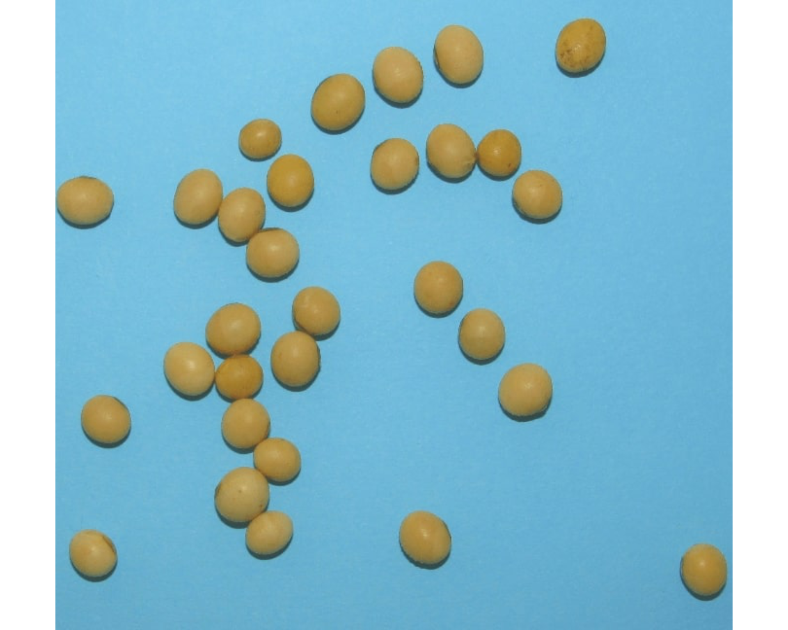
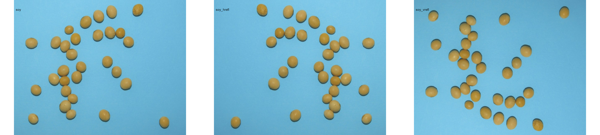

Image manipulation with pliman
Tiago Olivoto
2023-10-22
Source:vignettes/manipulation.Rmd
manipulation.RmdImage manipulation
Importing images
library(pliman)
#> |==========================================================|
#> | Tools for Plant Image Analysis (pliman 2.1.0) |
#> | Author: Tiago Olivoto |
#> | Type `citation('pliman')` to know how to cite pliman |
#> | Visit 'http://bit.ly/pkg_pliman' for a complete tutorial |
#> |==========================================================|
soy <- image_pliman("soybean_touch.jpg")To import a list of images, the argument pattern of the
function image_import() is used. All images that match the
pattern name are imported into a list.
soy_list <-
image_import(pattern = "sev_",
path = image_pliman()) # choose path directory
names(soy_list)
#> [1] "sev_back.jpg" "sev_healthy.jpg" "sev_leaf.jpg" "sev_leaf_nb.jpg"
#> [5] "sev_sympt.jpg"Displaying images
Single images are displayed with plot(). For combining
images, the function image_combine() is used. Users can
inform either a comma-separated list of objects or a list of objects of
class Image.
# Single images
plot(soy)
# Combine images
image_combine(soy, soy)
# Combine images
image_combine(soy_list, ncol = 5)
Manipulating images
pliman provides a set of image_*()
functions to perform image manipulation and transformation of unique
images or a list of images based on the EBImage
package.
Resize an image
Sometimes resizing of high-resolution images is needed to reduce the
processing time. The function image_resize() is used to
resize an image. The argument rel_size can be used to
resize the image by relative size. For example, by setting
rel_size = 50 to an image of width 1280 x 720, the new
image will have a size of 640 x 360. This is useful to speed up the time
of analysis such as those computed with analyze_objects()
and measure_disease().
image_dimension(soy)
#>
#> ----------------------
#> Image dimension
#> ----------------------
#> Width : 825
#> Height: 648
soy_resized <- image_resize(soy, rel_size = 50)
image_dimension(soy_resized)
#>
#> ----------------------
#> Image dimension
#> ----------------------
#> Width : 412
#> Height: 324Crop an image
Cropping images is useful to remove noises from the image edge, as
well as to reduce the size of images before processing. To crop an
image, the function image_crop() is used. Users need to
inform a numeric vector indicating the pixel range (width
and height) that will be maintained in the cropped
image.
crop1 <-
image_crop(soy,
width = 55:750,
height = 20:623,
plot = TRUE)If only width or height are informed, the
image will be cropped vertically or horizontally.
crop2 <-
image_crop(soy,
width = 55:750,
plot = TRUE)
If both width and height are missing, an
iterative process of image cropping is performed.
# only run in an iterative section
image_crop(soy)Additionally, an automated cropping process can be performed. In this case, the image will be automatically cropped to the area of objects with an edge of five pixels by default.
auto_crop <- image_autocrop(soy, plot = TRUE)The function image_trim() is used to trim pixels from
image edges.
# trim 50 pixels from all edges
soy_trim <- image_trim(soy, edge = 50, plot = TRUE)
# The same is achieved with
soy_trim2 <-
image_trim(soy,
top = 50,
bottom = 50,
left = 50,
right = 50,
plot = TRUE)
# trim 100 pixels from top and bottom
soy_trim3 <-
image_trim(soy,
top = 100,
bottom = 100,
plot = TRUE)
# trim to 5 pixels around objects' areaImage resolution (DPI)
The function dpi() runs an interactive function to
compute the image resolution given a known distance informed by the
user. To compute the image resolution (dpi) the user must use the left
button mouse to create a line of known distance. This can be done, for
example, using a template with known distance in the image (e.g.,
leaves.JPG).
# only run in an interactive section
leaves <- image_import("./data/leaf_area/leaves.JPG")
dpi(leaves)Rotate an image
image_rotate() is used to rotates the image clockwise by
the given angle.
soy_rotated <- image_rotate(soy, angle = 45, plot = TRUE)
Horizontal and vertical reflection
image_hreflect() and image_vreflect()
performs vertical and horizontal reflection of images, respectively.
soy_hrefl <- image_hreflect(soy)
soy_vrefl <- image_vreflect(soy)
image_combine(soy, soy_hrefl, soy_vrefl, ncol = 3)
Horizontal and vertical conversion
image_horizontal() and image_vertical()
converts (if needed) an image to a horizontal or vertical image,
respectively.
soy_h <- image_horizontal(soy)
soy_v <- image_vertical(soy)
image_combine(soy, soy_h, soy_v, ncol = 3)Filter, blur, contrast, dilatation, and erosion
soy_filter <- image_filter(soy)
soy_blur <- image_blur(soy)
soy_contrast <- image_contrast(soy)
soy_dilatation <- image_dilate(soy)
soy_erosion <- image_erode(soy)
image_combine(soy, soy_filter, soy_blur, soy_contrast, soy_dilatation, soy_erosion)Exporting images
To export images to the current directory, use the function
image_export(). If a list of images is exported, the images
will be saved considering the name and extension present in the list. If
no extension is present, the images will be saved as *.jpg
files.
image_export(soy, "exported.jpg")